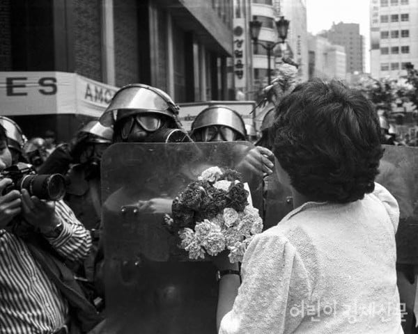
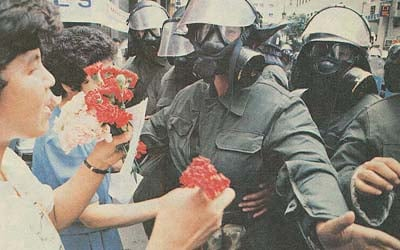
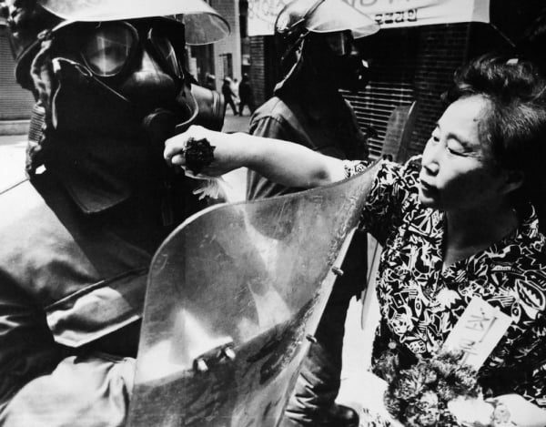
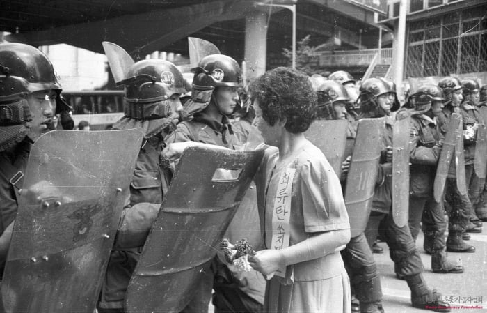

'카네이션'
당시 중년 여성 시위대가 '전투경찰은 우리의 적이 아니다. 부디 최루탄을 쏘지 말라'고 하면서
전경한테 카네이션을 달아줬다고 함..... ㄷㄷ




'카네이션'
당시 중년 여성 시위대가 '전투경찰은 우리의 적이 아니다. 부디 최루탄을 쏘지 말라'고 하면서
전경한테 카네이션을 달아줬다고 함..... ㄷㄷ
워치멘에서 총에 꽃 꽂아주니까 걍 쏴버리던데
갠 자원 전경은 끌려간거야.
프라하에서는 흔한풍경
저때가 시위대 조지려고 방패 아래부분 날카롭게
바닥에 갈았다는 시대자너
암흑의 시대임 시위대는 화염병던지고 대나무로 전경 눈찌르고 끌고가서 작살내고 그냥 서로 그러던시대였음
화염병에 모래넣어서 진압복 속과 보호망 안에 눈알을 태워버리던 시절이야
관점만 바꾸면 이런말도 가능해
전차포에 꽃 넣은게 어디더라??
천안문과 서울 모두 전경군인들한테 폭력을 쓰지 않았지만
서울은 요구를 수용했고 천안문은 탱크로 밀어버렸지
서울도 잘못하면 클날수도 있긴했어
여긴 그나마 미국이 있었는데 저기는 없었으니...
에이 한국도 탱크만 안쎳지 몇번 밀어버리고 지워버리도 하다가 결국 받아들여진거잖아
1980년부터 돌아보면 할말은 없지만 그래도 결과가 절망은 아니니까
요구를 수용?????어느 지구의 한국입니까??
6월 민주항쟁도 모르면 나가라
민주항쟁때 여당 대표가 개헌안을 발표한게 요구를 수용한거임??요구를 수용이면 보통 정부 얘기가 맞지 않음?
말꼬리 잡는다고 생각할 수 있는데 국민의 요구를 수용한다는것과 다른 대선후보가 이렇거 하겠다는 좀 큰 차이가 있어보인다
탱크로 미는거랑 헬기에서 쏜거랑 그다지 차이가 없어 보이기도 하고 6월 민주항쟁때도 계엄령 직전까지 갔다가 미국한테 개욕쳐먹어서 못한거지 요구 수용은 너무 말랑한 워딩같아서 드리는 말씀입니다.
ㅋㅋㅋㅋ방금 막 검색해보고 와서 민망한지 말이 길어져
자세한건 ㅇㄱㄸ라서 말 못하지만 6월항쟁의 구호가 호헌철폐 독재타도 민주쟁취인데 대통령 직선제 개헌을 이뤘으면 그게 "요구 수용"이 아님? "요구를 수용이면 보통 정부 얘기가 맞지 않음?" 이라는 주장의 근거가 대체 뭐임? 중학교 사회과목 수준에서만 띵킹을 해봐도 개헌 관련이면 야당 총수들이 가져온 사안을 여당 당대표가 수용하겠다고 했으면 그게 수용이 아니냐???
중국 탱크로 밀고
한국 요구수용
이렇게 비교하는 워딩이 맞다고 봄?
한국은 5.18 민주화 항쟁이랑 천안문 사상자가 그리 차이 안나는데?? 나는 이걸 짚은거지
어영부영 다음 정부한테 넘긴게 왜 요구 수용이라고 쓸수있는지 모르겠네, 이미 민주화 항쟁에 피를 엄청나게 흘리고 또 흘리기 직전에 스톱된거지
왜 자꾸 말이 바뀌냐 걍 몰랐던거 인정을 하지..5.18이랑 6월 민주항쟁이랑 텀이 몇년씩 난다는거는 알고 있니..?
심지어 사상자 수가 차이가 안난다는건 대체 천안문 항쟁 사상자 수를 어떻게 알고 있길래 하는 개소리임?
https://theme.archives.go.kr/next/518/paper4.do
5.18 사망자 수는 계엄군까지 다 합쳐도 200명 미만이란다ㅋㅋ
그리고 ㅇㄱㄸ를 유도하는건지 뭔지 모르겠지만 "다음정부에 미뤘다"는 사실이 아님. 당장 바로 다음 대선부터 직선제였어. 그리고 개헌은 국회가 하는거라서 여당 야당 당대표들이 직선제 개헌하겠다고 하는게 사리에 안 맞지도 않음.
무엇보다 원댓글이 뭐 한국은 피를 흘리지 않았다고 거짓말을 한 것도 아니고 그냥 한국 시위는 성공했고 중국은 "천안문" 했다는게 팩튼데 대체 뭐때문에 말을 자꾸 바꾸면서 이상한 소리 하시는거야?
그럼 그렇게 쓰셔야지.
한국이 성공한거고 중국이 실패했다.
한국정부도 전혀 들어줄 마음이 없었다가 팩트인데
한국 수용, 중국 탱크로 밀었지가 워딩이 안맞는다는데, 정부가 잘못했는데 정부가 사과해야지 여당대표가 이렇게 하겠다 하는거자체가 책임 회피라고.
수용이라는 워딩이 안맞다는데
님 지금 하는 말들이 조금만 삐딱하게 바라보면 6월항쟁은 실패했고, 5.18이나 천안문이나 사상자는 그게 그거다(사실아님)
라는 뜻인거는 인지하고 있죠? 되게 참깨나 할 법한 소리를 하고 있네
나는 정부가 마치 들어준거처럼 요구 수용이라고 쓰면 안된다. 우리도 민주화 운동을 위해 엄청난 피를 흘렸고, 정부가 전혀들어줄 마음이 없었다가 논지의 요점인데 뭔
중년 여성분들은 진압대들 입장에서도 어머니 나이대라 함부로 못하고
저시대 중년 여성들은 이미 몇십년 전부터 시위 짬밥 꽤 있으시던 분들이실테니 진압대를 굳이 적으로 돌릴 이유가 없다는걸 아셨겠지
앞서 목숨 거신 분들이 있기 때문에 지금도 혁명이니 시위니 해도 안전하게 할 수 있는 거라고 생각.
6월 항쟁때 경찰은 진짜로 사람패는 깡패인데 아주머니 깡도 좋네
외박 나가면 집에 저런 어머니들이 있는데 어케 패냐
저때 경찰은 최루탄 직사로 사람한테 쏘던 시절이라 큰 용기 냈던거임
2010-16사이쯤인가.. 그때 시위할때도 물 건네고 격려하고 그랬지